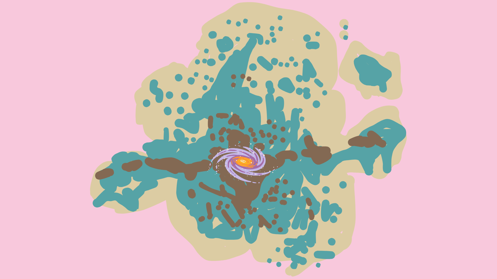
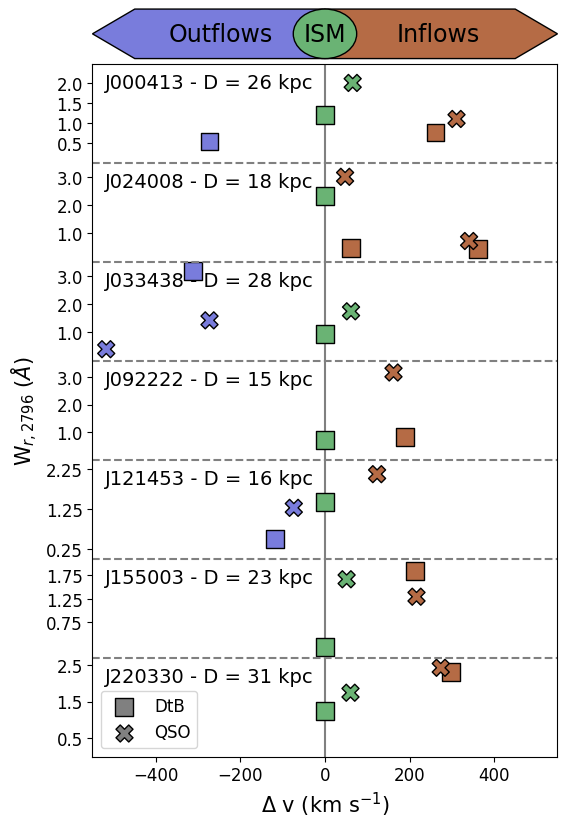
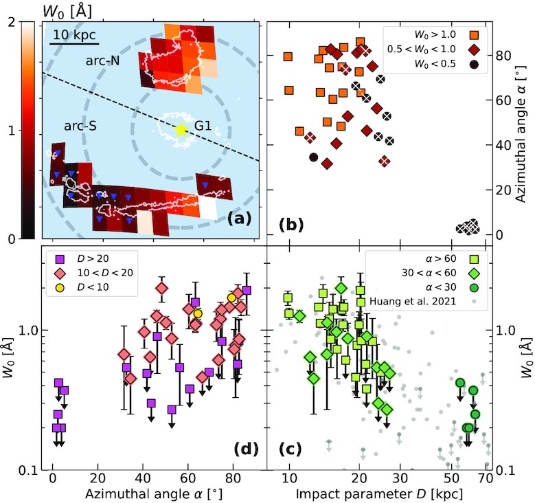

Research
My main area of research is the study of the gas around galaxies, also known as the circumgalactic medium (CGM). The above drawing (made by myself) shows the complex multiphase structure of the CGM. If you are interested, check out my papers below.
We present Keck/LRIS spectroscopy of seven isolated galaxy--quasar pairs at 0.4 < z < 0.6, each exhibiting ultra-strong MgII absorption W_r,2796 > 3 A, probing both down-the-barrel and transverse gas flows. Down-the-barrel galaxy spectra reveal outflows in three galaxies v = 19 to 311 km/s) and inflows in five (v = 61 to 361 km/s), including one system showing inflows and outflows simultaneously. All galaxies with detected inflows are below the star-forming main sequence, suggesting that they might be actively replenishing their gas reservoirs. Outflows have a mean covering fraction of C_f,out=0.5, whereas inflows show a lower average of C_f,in=0.3. Mass flow rates span dM/dt_in = 0.01-1.18 Mo/yr for inflows and dM/dt_out = 0.23-1.03 Mo/yr for outflows, yielding mass loading factors below unity and implying these galaxies cannot sustain their current level of star-formation rates. These results are based on the T~10^4 K photoionised gas phase traced by MgII; additional accreting/outflowing material in other gas phases may also be present, but remains undetected in this study. Quasar sightlines consistently show redshifted inflow components and blueshifted outflow components, demonstrating that ultra-strong MgII absorbers trace baryon cycling out to impact parameters of D = 15-31 kpc. Individual flow origins may include filamentary accretion, a galactic fountain, and minor mergers, potentially driven by undetected companions. Moreover, the unexpectedly high prevalence of inflows suggests that ultra-strong MgII absorbers preferentially occur in denser environments that channel gas onto galaxies, offering a powerful strategy for future surveys to systematically map inflow and outflow cycles across cosmic time.
This article has been submitted to MNRAS, stay tuned to read the full article!

While most galaxies live in group environments where they undergo an accelerated evolution, the characteristics of their circumgalactic medium (CGM) remain uncertain. We present an analysis of the CGM of two galaxy groups in different stages of interaction: (G1) a close pair of galaxies (z = 0.043) separated by 87 kpc that do not show signs of interactions and (G2) four merging galaxies (z = 0.098) separated by 10 kpc. We present spatially resolved Keck/Keck Cosmic Web Imager galaxy observations and Hubble Space Telescope (HST)/COS quasar spectra (G1 at 48 kpc and G2 at 100 kpc away) to quantify both the resolved galaxy and CGM properties in these two different group environments. G1 contains two typical star-forming galaxies with no evidence of strong outflows. G2 contains two star-forming, one post-starburst and one quiescent galaxy. Both groups have a range of CGM-detected metal lines (H I, C II, Si II, Si III, N V, and O VI). Despite G2 being twice as far from the quasar, G2 has log(N(H I) / cm^-2) = 17.33, compared to log(N(H I) / cm^-2) = 16.43 for G1. We find that the CGM of the merging galaxies (G2) is more kinematically complex, is in a higher ionization state, spans a wider range of metallicities and column densities, has smaller cloud sizes, and is inconsistent with the simple superposition model that seems to match well with G1. We conclude that the complexity of the CGM in merging galaxies surpasses that of not strongly interacting galaxies, suggesting that mergers play a significant role in shaping the intricate structure of the CGM.
You can read Fernandez-Figueroa et al. 2024 here!
We use spatially resolved spectroscopy of a distant giant gravitational arc to test orientation effects on Mg II absorption equivalent width (EW) and covering fraction (〈κ〉) in the circumgalactic medium of a foreground star-forming galaxy (G1) at z ∼ 0.77. Forty-two spatially-binned arc positions uniformly sample impact parameters (D) to G1 between 10 and 30 kpc and azimuthal angles α between 30° and 90° (minor axis). We find an EW-D anticorrelation, akin to that observed statistically in quasar absorber studies, and an apparent correlation of both EW and 〈κ〉 with α, revealing a non-isotropic gas distribution. In line with our previous results on Mg ii kinematics suggesting the presence of outflows in G1, at minimum a simple 3D static double-cone model (to represent the trace of bipolar outflows) is required to recreate the EW spatial distribution. The D and α values probed by the arc cannot confirm the presence of a disc, but the data highly disfavour a disc alone. Our results support the interpretation that the EW-α correlation observed statistically using other extant probes is partly shaped by bipolar metal-rich winds.
You can read Fernandez-Figueroa et al. 2022 here!